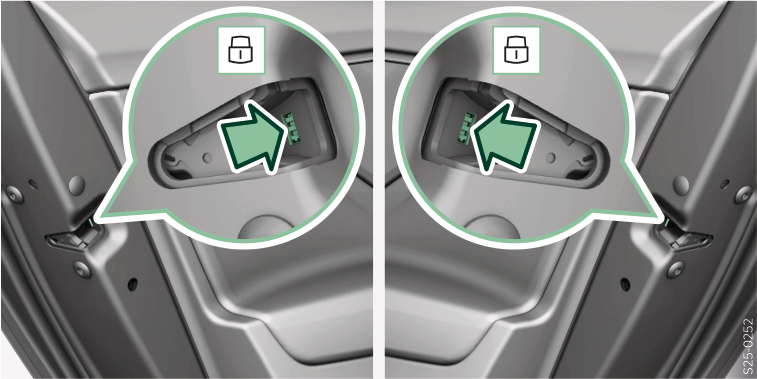
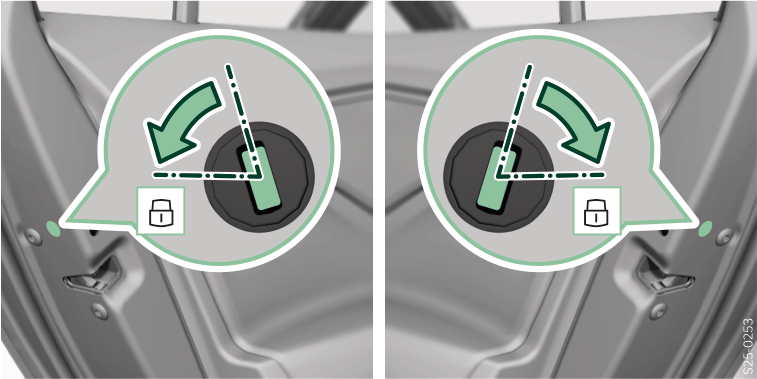

Déposer et poser le revêtement sur une portière à barillet

AVERTISSEMENT
Risque d’endommagement de la peinture par le panneton !
Manipuler le cache de serrure avec précaution.
Retirer le cache :
Tirer sur la poignée de la portière avant gauche et la maintenir en place.
Insérer le panneton de télécommande dans le renfoncement situé sous le cache.
Rabattez le cache dans le sens de la flèche .
Relâchez la poignée de la portière.
Poser la protection :
Tirer sur la poignée de la portière et la maintenir tirée.
Remettez le couvercle en place.
Relâchez la poignée de la portière.
Déverrouiller et verrouiller la portière à barillet

L’alarme retentit lorsque la porte est ouverte (selon l’équipement du véhicule).
Introduire l'embout de clé et l’insérer dans le cylindre de serrure de manière à ce que le porte-clés soit aligné avec l'arrière du véhicule.
Effectuer l’opération de déverrouillage ou de verrouillage (vérifier que le véhicule est verrouillé).
S’applique aux véhicules avec fonction SAFE activée :
Lors du verrouillage, toutes les portes sont verrouillées.
Si certaines portes ne peuvent pas être verrouillées, verrouiller les portes mécaniquement.
Verrouiller la portière sans barillet


Ouvrir la portière.
Sur les véhicules dotés d’un cache pour l’ouverture, retirer le cache.
Insérer le panneton ou un tournevis à tête plate dans la fente.
Version 1 : Pousser vers la porte avec le panneton ou un tournevis plat.
Version 2 : Tourner le panneton ou un tournevis à tête plate en la sortant du véhicule (position à ressort).
Fermer la porte.
La porte est verrouillée une fois fermée.
La porte peut être ouverte de l'intérieur si la sécurité enfants n'est pas activée.
S'applique à la conduite à droite.
Si la porte du conducteur se déverrouille de nouveau après le verrouillage, effectuer le verrouillage d’urgence en suivant les instructions Clés.
Ouvrir la porte verrouillée avec la sécurité enfant activée
Tirer sur le levier d'ouverture de la porte.
Ouvrir la porte de l'extérieur.